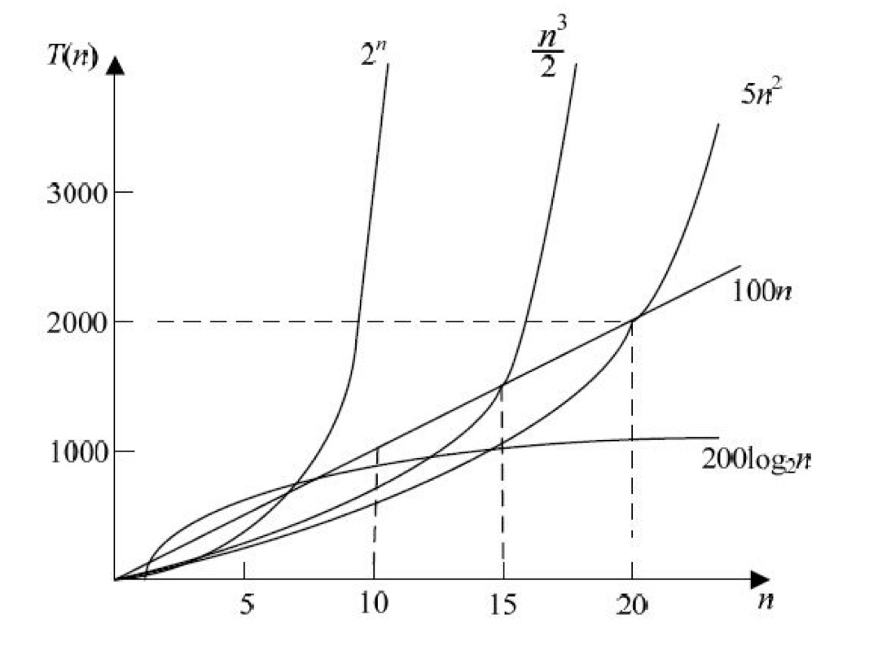
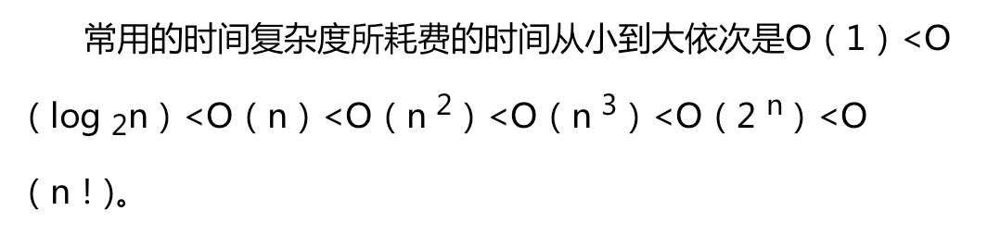

T(n) = O(f(n)) 解析
T(n) = O(f(n)) 解析
$f(n)$ 是关于问题规模 n 的一个函数, 为基本语句执行次数关于 n 的一个函数。这里 n 表示的是待处理数据的个数，而$f(n)$则是一套语句执行的次数（times）. 以此可以画出一条当 n 从小大时语句执行次数的函数曲线。
times 与 T是正相关的，执行次数就相当于时间（只是在不不同机器不同语言下，相同次数时间不等，所以不是精确的对应时间 – 算法复杂度描述的也不是具体的时间，而是问题规模 n 变大之后，时间的变化趋势），在相同问题下（同样规模）， times越多，$T(n)$就越大。
另附：典型函数复杂度曲线

复杂度评估
以冒泡排序为例，要经历n-1次外部循环，对于每次外部循环，内部循环要执行 n-i-1次。整体来说，对于一个倒序数组（最差情况），内部交换语句执行的次数依次为：n-1, n-2, …, 1，所以时间复杂度为$O(n^2)$. 对于最好情况，数组已经有序了，此时按照下面代码，内部循环还是要进行 n-i-1次两两比较（虽然没有发生交换），所以这部分时间复杂度也是$O(n)$,再算上外部的 n-1次循环，所以整体也是$O(n^2)$. 那是不是冒泡排序最好情况就是$O(n^2)$了呢？不是的，这跟代码有关，下面的代码确实是这样的，但是进行优化后，就可以避免这种外部的循环执行那么多次，对于有序的序列，加上一个标志位，就可以在第一次两两比较时确定数组有序，循环就可以终止了，代码参见（2），相关文章参见：冒泡排序最好情况下时间复杂度：
1
2
3
4
5
6
7
8
9
10
11
12
13
14
15
16
17
18
19
20
21
22
23
24
25
26
27
28
29
30
31
32
33
34
35
36
37
38
39
40
41
42
43
44（1）
public class Bubble extends Sorting{
@Override
public int[] sort(int[] array){
int temp;
for(int i=0; i< array.length-1; i++){
for(int j=0; j< array.length-i-1; j++){
//bubble to the right
//for ascending sorting, the bigger one bubble to the right
//for descending sorting, the smaller one bubble to the right
if(array[j] > array[j+1]){
temp = array[j];
array[j] = array[j+1];
array[j+1] = temp;
}
}
}
return array;
}
}
（2）
public void bubbleSort(int arr[]) {
boolean didSwap;
for(int i = 0, len = arr.length; i < len - 1; i++) {
didSwap = false;
for(int j = 0; j < len - i - 1; j++) {
if(arr[j + 1] < arr[j]) {
swap(arr, j, j + 1);
didSwap = true;
}
}
if(didSwap == false)
return;
}对于数组遍历，一个循环基本语句运行 n 次，所以是$O(n)$ 复杂度；同理，对于二重循环遍历，基本语句执行次数为$n*n = n^2$次，所以复杂度为$O(n^2)$. 上面的Bubble虽然也是两重循环，但是由于第二层循环并不是每次都执行基本语句（交换数组元素），所以它的时间跟这里的二重循环遍历是有差异的，但是整体来讲，它们都是$O(n^2)$.
对于二分查找等，每次数据砍掉一半，这种算法的时间复杂度是$O(log_2^n)$, 如果外边再套一层 for 循环，那么它的时间复杂度将是：$O(nlog_2^n)$.
$O(log_2^n)$ 和 $O(log_{10}^n)$ 即$O(lg^n)$本质是一样的，因为这两个对数之间相差的是常数倍（根据对数运算法则），常数阶对于算法复杂度没有太大影响。
算法复杂度分析(二分查找)
About complexity
Take binary search for example. The complexity of binary search is $log_2^n$, but what does it mean? For binary search, every time the remaining number will be half of the original number($n/2/2/2/2/2…/2 == n/2^t$) until the number equals 1. So the the search times is the number of 2 (that is, the number of the operation of dividing 2) . ($log_2^n$) is just exactly the times(t) of this operation. So the result of $log_2^n$ represents the operation times. The operation times also stands for the running time of the algorithm.
ps: The complexity is the “running times” of the program and it is also the “running time” of the program.
对于归并（Merge sorting）排序，每次将待排序数组分成两部分（归并排序每次两两归并，一共有logN趟，而每趟的时间复杂度为O(N)），这个两部分的划分是以数组索引来确定的，所以不管数组是否有序或者倒序，或者乱序，都不影响分组。有这个一分为二的操作，那么就有$log_2^n$的因子；对于对应的每次归并操作，都要遍历两个数组元素，比较其大小，时间复杂度为$O(n)$. 所以归并排序时间复杂度最差情况也为$O(nlog_2^n)$.
对于快速（Quick sorting）排序，也是将待排序数组分成两部分，但是这个划分是有区别的，对于有序或者倒叙数组，每次划分实际上都只得到一个数组（pivot 左边数组为空或者右边数组为空）这时并没有实现一分为二的目的，所以递归次数并不是 $log_2^n$, 而是$n$, 再算上每次再以 pivot 值将数组一分为二时，需要从左和从右双向扫描数组（实现大于 pivot 的元素放在 pivot 右边，小于 pivot 的元素放在 pivot 左边），所以乘以$n$,所以在有序或者倒叙情况下，快排的时间复杂度是$O(n^2)$; 当为乱序的情况时，数组可以一分为二，此时时间复杂度为$O(nlog_2^n)$.
对于插入排序(Insertion sorting), 要经历从第二个元素开始到最后一个元素的遍历，时间复杂度为$O(n)$，并且对于每一次遍历,要将选中的元素与其前面的所有元素进行一轮比较（时间复杂度也为$O(n)$），所以插入排序时间复杂度为$O(n^2)$; 而对于最好的情况，数组已经有序时（包括数组中所有元素值都一样的情况），此时虽然也要经历 n-1 次遍历（$O(n)$），
并且对于每次遍历，也需要将其与它前面的所有元素比较，但是因为数组有序，所以不需要进行 swap 的操作，但是这不意味着这部分的时间复杂度是$O(1)$,因为还是要进行大小比较，只是不交换罢了，所以这部分时间复杂度还是$O(n)$，对于每次遍历，所取的要进行比较的那个元素前面已经是有序的了，所以找到一个小于等于改元素值的元素，就不需要再往左比较了。那么最好情况下，数组有序或者元素相同，那么每次遍历到的那个元素只需要跟它前面的一个元素比较就会发现它本身就是最大的，所以循环就跳出了，故此这部分的时间复杂度是$O(1)$,所以插入排序最好情况下时间复杂度为$O(n)$.
相关文章参见：插入排序及其复杂度分析
补充：空间复杂度
- 空间复杂度表示为$S(n) = O(f(n))$， 其中f(n)为语句关于 n 的所占存储空间的函数。
- 除了存储程序、输入数据之外（这些与算法无关）， 还有在算法执行过程中需要分配的辅助空间，空间复杂度考虑的是这一块辅助空间随问题规模 n 变化的趋势。如果一个算法在运行时，开辟的辅助空间与问题规模无关或是一个常数，那么这个算法的空间复杂度为$O(1)$.